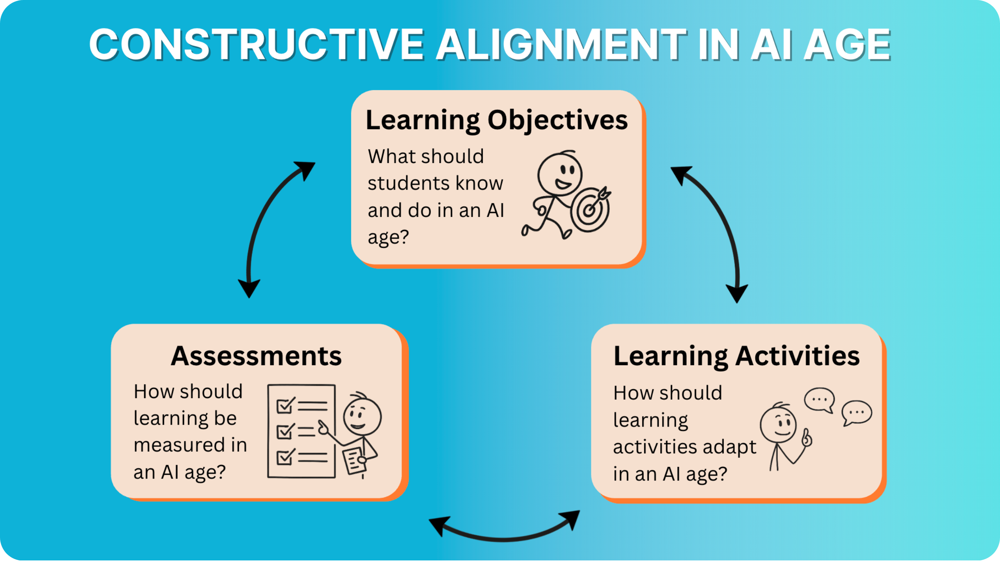
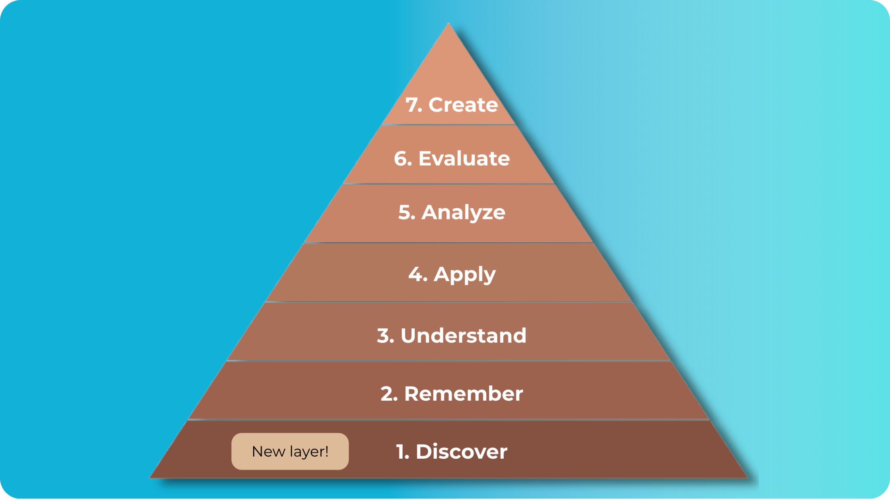

Changing Learning Objectives#
Constructive alignment (the principle that learning objectives, activities, and assessments, should work together) has long been central to effective course design. When properly aligned, students understand what they need to learn, engage in activities that build those skills, and demonstrate their understanding through meaningful assessment.
However, with the introduction of AI, tasks that once required students to think critically can now be completed in seconds. Thus, turning assignments into ways of evaluating prompting skills rather than learning. Hence, the challenge becomes redesigning aspects of constructive alignment to ensure that AI enhances student thinking, rather than replacing it.
{kind=link}

To address this challenge, this section examines how AI reshapes learning at each stage of Bloom’s taxonomy. You don’t need to use Bloom’s taxonomy in your teaching, but for the sake of understanding, we use this framework as a way to compartmentalize the different ways students can learn while using AI. In practice, these cognitive levels are far less structured and hierarchical than the Bloom’s taxonomy model suggests.
AI-Updated Blooms Taxonomy#
This section examines each stage of Bloom’s taxonomy reinterpreted for an AI-rich world. For every level, beginning with the new foundational skill of Discover, we explore how AI can act as a powerful partner, what tasks it can perform effectively, and where meaningful human thinking remains essential.
{kind=link}

Discover sits at the foundation because finding and evaluating information through AI has become as fundamental as memorization once was. While Discover involves sophisticated skills like evaluating credibility and strategic searching, it sits at the base of the pyramid because without quality information, students cannot meaningfully remember, understand, or create anything with AI.
By understanding the updated Bloom’s taxonomy, educators and students can better see how AI reshapes the balance of cognitive effort and why human judgment, creativity, and reflection remain at the core of genuine learning.
Discovery goes far beyond basic internet searching. It requires formulating specific queries, understanding AI capabilities and limitations, evaluating source credibility, and curating information systematically.
For example, an engineering student designing a renewable energy project for a rural community must decide which information to gather first. This could include technical specifications, case studies of similar projects, local environmental constraints, and cost-benefit analyses. AI can act as a valuable research partner by providing relevant papers and technical data, but the student must confirm that the sources are accurate, region-specific, and applicable to the project’s goals. By filtering and sequencing the information, the student ensures that the discovery phase produces high-quality inputs for subsequent design and evaluation.
The rise of AI tools requires a fundamental shift in how educators approach memorization. Instead of abandoning factual recall, institutions must become more selective about what students commit to memory.
Calculators can perform all arithmetic operations, yet mathematics education still emphasizes basic mental math. This approach works because foundational knowledge enables higher-order thinking and independent problem-solving when tools are unavailable. The same logic applies across all disciplines in an AI-integrated classroom.
Medical students demonstrate this principle clearly. While AI can calculate drug dosages, students must still memorize standard safe dosages for common medications. During emergencies or when technology fails, this foundational knowledge prevents serious harm.
At the same time, many details no longer need to be memorized. A history student can now ask an AI, “What was the war called where Napoleon attacked most of Europe?” and receive detailed information about the Napoleonic Wars (1803–1815). Hence, educators should focus on memorising only the true fundamentals. For non-essential details that AI can easily retrieve, teaching should instead emphasize higher order thinking (eg. using content to identify patterns and assess significance).
AI tools excel at providing clear explanations, analogies, and multiple perspectives on complex concepts, but students must move beyond passive consumption to active interpretation.
Here, AI serves as the patient tutor, providing explanations and answering follow-up questions. Students serve as active interpreters, taking those explanations and embedding them within broader frameworks of meaning. For instance, after AI explains Newton’s second law, students must articulate why this principle matters in real-world contexts or consider its ethical implications in engineering decisions.
Here the most effective approach treats AI as a collaborative learning partner rather than a replacement for thinking. Students can explain concepts in their own words, then ask AI to evaluate their understanding or suggest improvements.
Generative AI tools and agents are becoming increasingly capable of solving problems and adapting to new situations. Yet, physical constraints and human dynamics create application challenges that remain uniquely human.
For example, AI can simulate a titration experiment and even suggest adjustments, but students in a chemistry lab must physically conduct the experiment, take precise measurements, and handle unexpected outcomes. Similarly, in a policy course, AI can draft interview questions, but students must conduct real interviews with experts. Here, the AI provides procedural knowledge and the student applies it within the messy complexity of human interaction.
Real-world application demands that students build meaningfully on the Remember and Understand levels. For example, the chemistry student conducting an experiment must recall safety protocols instantly when unexpected reactions occur, understand underlying principles to troubleshoot problems, and then apply this integrated knowledge in real-time decision-making.
AI excels at processing vast amounts of data and identifying patterns that would take humans weeks to discover. However, students must develop the critical thinking skills to determine why those patterns matter, whether the analysis is valid, and how insights connect to real-world implications.
For example, AI might analyze political speeches and identify increasingly nationalistic language patterns, even offering justifications. However, students must validate whether this AI analysis holds up against other historical evidence, determine whether this pattern was actually significant compared to other factors, and judge how this finding should influence current policy decisions. Thus, AI can generate the interpretation, but students must evaluate its accuracy and decide its real-world importance.
This creates an essential new skill: analyzing AI analysis itself. Students must learn to critique AI-generated analysis, cross-check conclusions against other evidence, and identify when AI pattern-detection misses crucial context.
AI excels at mechanical evaluation tasks. It can apply grading rubrics consistently, generate comprehensive pros and cons lists, and check arguments against established criteria. Hence, a student evaluating policy options might use AI to receive a more comprehensive evaluation than any single human expert could provide, complete with precedents, stakeholder impacts, and potential consequences.
However, students must learn to use this comprehensive AI analysis as sophisticated input rather than final judgment. When AI evaluates competing historical interpretations and suggests one is “more convincing based on available evidence,” students must examine that reasoning, consider whether they agree with the AI’s weighting of different factors, and develop their own defensible position. The goal is not to compete with AI’s comprehensive analysis, but to engage with it critically and develop independent evaluative skills.
Creating new work with AI represents the highest level of cognitive effort because it integrates every preceding skill. Although, AI can generate ideas, drafts and designs, it cannot create with genuine experience. For this reason, meaningful creation happens when students iteratively build on AI-generated ideas and transform them into original work that reflects their own thinking and values.
The students role is to curate, refine, and add personal meaning. For example, if AI suggests several research directions, students must decide which aligns best with their interests and goals. Making these decisions requires reflection and draws on every preceding skill in Bloom’s taxonomy. Through constant iteration they produce something that is authentically theirs.
Documenting the creative process is essential for both learning and academic integrity. Students should show the drafts they considered, the decisions they made, and how their ideas evolved. This transparency reinforces that creativity is more than producing a polished final product. Instead, it is the deliberate act of making choices, integrating insights, and demonstrating originality and growth.
Updating Learning Objectives#
Understanding how AI reshapes Bloom’s taxonomy is the first step to updating learning objectives. The problem is that many well-intentioned learning objectives (eg. involving verbs like “identify,” “understand,” and “analyse”) become nearly impossible to assess in the AI age. How do you know if a student truly understands the interactions between disciplines, or if they’ve just asked AI to explain it?
Thus, updating learning objectives requires working backward from what you actually want students to be able to do, not just know. This means asking two critical questions:
What cognitive work is essential for students to do themselves? Ask yourself what genuinely builds the competencies they need.
What can AI legitimately help with? If AI can retrieve information or generate initial analysis, that’s not necessarily bad. However, the learning outcome must require students to do something with that AI-generated content.
Ultimately, redesigning learning objectives requires innovating within all aspects of constructive alignment. Firstly, you identify what students must genuinely learn (versus what AI can support). Next, you need to deliver that content in engaging ways that make students want to do the cognitive work themselves. Lastly, you need to design assessments that make it impossible for AI to bypass the intended learning objetives. The following sections focus how to adapt the final two pillars of constructive alignment.